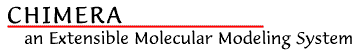

Release HistoryChanges from the previous release:
- SimpleSession is now connected to session-saving options under the File menu and can save the status of some extensions (Volume Viewer, Volume Path Tracer, and Scale Bar)!
- New extensions:
- Multalign Viewer -- manipulate multiple sequence alignments.
- Accelerators -- use and define keyboard shortcuts.
- Scale Bar -- draw a scale bar and associated label.
- Phantom -- use a Phantom force feedback device to place markers in volume data.
- Improved extensions:
- Filtering by H-bonds with ViewDock.
- Volume Viewer can show solid display "maximum intensity projection".
- Volume Path Tracer has minor interface rearrangements.
- Redesigned image-saving procedure (File... Save Image...)
- New "united atom" VDW radii based on the ProtOr set and ionic radii from the Handbook of Chemistry and Physics.
- Status line and associated preference (Messages category).
- Preference for open/save dialog start directory (General category).
- Help menu reorganized.
- Menu and widget text standardized (capitalization/punctuation).
- New "Model Panel and Ensembles" tutorial (User's Guide).
- Many documentation improvements.
- Fixed bug that disallowed rotation of adjacent torsions.
- Fixed bug with VRML material that caused VRML models to be black.
- Adjust sphere and cylinder subdivisions with screen size to improve graphics response and visual quality.
- Upgraded to Python 2.2.1 and other packages.
- Added workaround for IRIX 6.5.16's "unresolvable symbol in /usr/lib32/libumf.so: xfree".
Known bugs/workarounds:
- This release crashes on Mandrake 8.2 Linux. The only known workaround is to upgrade to Mandrake 9 (currently in beta), which Chimera does runs on.
- On some Linux systems (Debian only?), there are conflicts between chimera's Tcl/Tk libraries and the system ones. A workaround is to add a couple of symbolic links in the lib directory of the chimera installation:
% cd ..../chimera/lib % ln -s libtk8.3.so libtk8.3.so.1 % ln -s libtcl8.3.so libtcl8.3.so.1- On some Windows machines, attempting to launch Chimera produces an error dialog saying that some unspecified file's name has bad syntax. If you have this problem send us mail and we will send you a fixed version of chimera.exe.
- Resizing the model panel's sequence window starts a bizarre near-infinite resizing loop. Workaround: don't resize it!
- On certain Windows installations, the "Distances" and "Adjust Torsions" panes of the Structure Measurements dialog cannot be resized. The workaround is to switch to the "Angles/Torsions" pane (which can be resized), resize that to the size you want the non-resizable pane to be, and then switch back to the non-resizable pane.